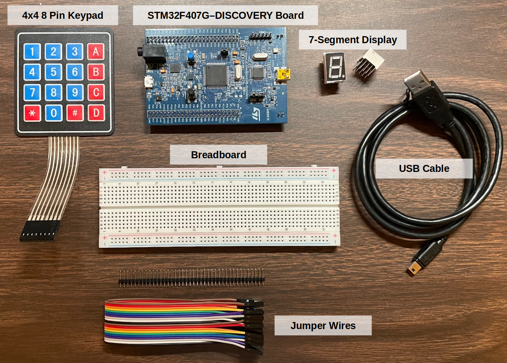

Home | Notes | Projects > 7-Segment Display Control with Keypad
An embedded C program to control 7-segment display with keypad and STM32F microcontroller board
Be able to read schematics.
Get familiar with controlling the General Purpose Input/Output (GPIO) of microcontroller (STM32x) by directly accessing and configuring the memory-mapped registers. (Without using Hardware Abstraction Layer (HAL) library)
Understand how the 4x4 keypad and 7-segment display interfacing works.
Get familiar with referencing datasheets.
[!] Note: '*' is mapped to 'E' and '#' is mapped to 'F'

IDE - STM32 CubeIDE Version 1.10.1 (GCC compiler)
Host OS - Ubuntu 22.04 LTS
xxxxxxxxxx3781//========================================================================================2// Filename : keypad_svnseg_interface.c3// Description : Embedded C program to control 7-segment display with keypad and STM32 board4// Author : Kyungjae Lee5// History : 02/07/2023 - Created file6//========================================================================================7
8// 7-Segment Interfacing: PE4-119//10// 7-segment pins11// 1 2 4 5 6 7 9 10 (3, 8: common cathode)12// PE7 PE8 PE9 PE10 PE11 PE12 PE13 PE14 (all input mode)13
14
15// Keypad Interfacing: PD0-3, PD8-1116//17// Keypad Pin18// 8 7 6 5 4 3 2 119// R1 R2 R3 R4 C1 C2 C3 C420// ----------------- -----------------21// output input22// PD0 PD1 PD2 PD3 PD8 PD9 PD10 PD1123//24// Pull-up resistor is necessary to avoid floating state of an input pin.25// Key not pressed = inputs are High26// Key pressed = inputs are Low27//28// When R1 is Low and all other rows are High, and when C2 is Low,29// we can conclude that the button 2 has been pressed (Intersection of C2 and R1)30
31
33 35
37
40// Port D41
47// Port E48
53// Segment to GPIO pin mapping54// PE1255// PE1156// PE957// PE858// PE759// PE1360// PE1461// PE1062
63void init();64void turn_on_svnseg(uint8_t hexval);65void keypad_svnseg_interfacing();66void delay(void);67
68volatile uint32_t *const pRCC_AHB1ENR = (uint32_t *)ADDR_RCC_AHB1ENR;69volatile uint32_t *const pPORTD_MODER = (uint32_t *)ADDR_PORTD_MODER;70volatile uint32_t *const pPORTD_ODR = (uint32_t *)ADDR_PORTD_ODR;71volatile uint32_t *const pPORTD_IDR = (uint32_t *)ADDR_PORTD_IDR;72volatile uint32_t *const pPORTD_PUPDR = (uint32_t *)ADDR_PORTD_PUPDR;73volatile uint32_t *const pPORTE_MODER = (uint32_t *)ADDR_PORTE_MODER;74volatile uint32_t *const pPORTE_ODR = (uint32_t *)ADDR_PORTE_ODR;75volatile uint32_t *const pPORTE_PUPDR = (uint32_t *)ADDR_PORTE_PUPDR;76
77int main(void)78{79 // Initialize registers80 init();81
82 // Keypad & 7-segment display interfacing83 while (1)84 {85 keypad_svnseg_interfacing();86 }87} // end main88
89// Initializes registers90void init()91{92 // Activate the GPIO peripheral (enable the clock).93 *pRCC_AHB1ENR |= (1 << 3); // for GPIOD, set bit[3]94 *pRCC_AHB1ENR |= (1 << 4); // for GPIOE, set bit[4]95
96 // Configure the GPIOE pins:97 // Set PE7 - PE14 to OUTPUT mode.98 *pPORTE_MODER &= ~(0xFFFF << 14); // clear99 *pPORTE_MODER |= (0x5555 << 14); // set100
101 // Configure the GPIOD pins:102 // Set PD0 - PD3 to OUTPUT mode (ROWs).103 *pPORTD_MODER &= ~(0xFF << 0); // clear104 *pPORTD_MODER |= (0x55 << 0); // set105 // Set PD8 - PD11 to INPUT mode (COLs).106 *pPORTD_PUPDR &= ~(0xFF << 16); // clear107
108 // Enable internal pull-up registers for input pins.109 // Pull-up resistor is necessary to avoid floating state of an input pin.110 *pPORTD_PUPDR &= ~(0xFF << 16); // clear111 *pPORTD_PUPDR |= (0x55 << 16); // set112
113 *pPORTE_ODR &= ~(0xFF << 7);114} // end init115
116// Reads keypad input and passes the input value to turn_on_svnseg()117void keypad_svnseg_interfacing()118{119 // Make all row GPIODs HIGH state.120 *pPORTD_ODR |= 0xF;121 // Make R1 (PD0) LOW state.122 *pPORTD_ODR &= ~(1 << 0);123
124 if (!(*pPORTD_IDR & (1 << 8)))125 {126 delay();127 turn_on_svnseg('1');128 }129
130 if (!(*pPORTD_IDR & (1 << 9)))131 {132 delay();133 turn_on_svnseg('2');134 }135
136 if (!(*pPORTD_IDR & (1 << 10)))137 {138 delay();139 turn_on_svnseg('3');140 }141
142 if (!(*pPORTD_IDR & (1 << 11)))143 {144 delay();145 turn_on_svnseg('A');146 }147
148 // Make all row GPIOs HIGH state.149 *pPORTD_ODR |= 0xF; // 1111150 // Make R2 (PD1) LOW state.151 *pPORTD_ODR &= ~(1 << 1); // 1101152
153 if (!(*pPORTD_IDR & (1 << 8)))154 {155 delay();156 turn_on_svnseg('4');157 }158
159 if (!(*pPORTD_IDR & (1 << 9)))160 {161 delay();162 turn_on_svnseg('5');163 }164
165 if (!(*pPORTD_IDR & (1 << 10)))166 {167 delay();168 turn_on_svnseg('6');169 }170
171 if (!(*pPORTD_IDR & (1 << 11)))172 {173 delay();174 turn_on_svnseg('B');175 }176
177 // Make all row GPIOs HIGH state.178 *pPORTD_ODR |= 0xF; // 1111179 // Make R3 (PD2) LOW state.180 *pPORTD_ODR &= ~(1 << 2); // 1011181
182 if (!(*pPORTD_IDR & (1 << 8)))183 {184 delay();185 turn_on_svnseg('7');186 }187
188 if (!(*pPORTD_IDR & (1 << 9)))189 {190 delay();191 turn_on_svnseg('8');192 }193
194 if (!(*pPORTD_IDR & (1 << 10)))195 {196 delay();197 turn_on_svnseg('9');198 }199
200 if (!(*pPORTD_IDR & (1 << 11)))201 {202 delay();203 turn_on_svnseg('C');204 }205
206 // Make all row GPIOs HIGH state.207 *pPORTD_ODR |= 0xF; // 1111208 // Make R4 (PD3) LOW state.209 *pPORTD_ODR &= ~(1 << 3); // 0111210
211 if (!(*pPORTD_IDR & (1 << 8)))212 {213 delay();214 turn_on_svnseg('*'); // * will be regarded as 'E'215 }216
217 if (!(*pPORTD_IDR & (1 << 9)))218 {219 delay();220 turn_on_svnseg('0');221 }222
223 if (!(*pPORTD_IDR & (1 << 10)))224 {225 delay();226 turn_on_svnseg('#'); // # will be regarded as 'F'227 }228
229 if (!(*pPORTD_IDR & (1 << 11)))230 {231 delay();232 turn_on_svnseg('D');233 }234} // end keypad_svnseg_interfacing235
236// Turns on 7-segment display corresponding to the passed hex value237void turn_on_svnseg(uint8_t hexval)238{239 *pPORTE_ODR &= ~(0xFF << 7);240
241 switch (hexval)242 {243 case '0':244 // ABCDEF245 *pPORTE_ODR |= SEG_A;246 *pPORTE_ODR |= SEG_B;247 *pPORTE_ODR |= SEG_C;248 *pPORTE_ODR |= SEG_D;249 *pPORTE_ODR |= SEG_E;250 *pPORTE_ODR |= SEG_F;251 break;252 case '1':253 // BC254 *pPORTE_ODR |= SEG_B;255 *pPORTE_ODR |= SEG_C;256 break;257 case '2':258 // ABDEG259 *pPORTE_ODR |= SEG_A;260 *pPORTE_ODR |= SEG_B;261 *pPORTE_ODR |= SEG_D;262 *pPORTE_ODR |= SEG_E;263 *pPORTE_ODR |= SEG_G;264 break;265 case '3':266 // ABCDG267 *pPORTE_ODR |= SEG_A;268 *pPORTE_ODR |= SEG_B;269 *pPORTE_ODR |= SEG_C;270 *pPORTE_ODR |= SEG_D;271 *pPORTE_ODR |= SEG_G;272 break;273 case '4':274 // BCGF275 *pPORTE_ODR |= SEG_B;276 *pPORTE_ODR |= SEG_C;277 *pPORTE_ODR |= SEG_G;278 *pPORTE_ODR |= SEG_F;279 break;280 case '5':281 // ACDFG282 *pPORTE_ODR |= SEG_A;283 *pPORTE_ODR |= SEG_C;284 *pPORTE_ODR |= SEG_D;285 *pPORTE_ODR |= SEG_F;286 *pPORTE_ODR |= SEG_G;287 break;288 case '6':289 // ACDEFG290 *pPORTE_ODR |= SEG_A;291 *pPORTE_ODR |= SEG_C;292 *pPORTE_ODR |= SEG_D;293 *pPORTE_ODR |= SEG_E;294 *pPORTE_ODR |= SEG_F;295 *pPORTE_ODR |= SEG_G;296 break;297 case '7':298 // ABC299 *pPORTE_ODR |= SEG_A;300 *pPORTE_ODR |= SEG_B;301 *pPORTE_ODR |= SEG_C;302 break;303 case '8':304 // ABCDEFG305 *pPORTE_ODR |= SEG_A;306 *pPORTE_ODR |= SEG_B;307 *pPORTE_ODR |= SEG_C;308 *pPORTE_ODR |= SEG_D;309 *pPORTE_ODR |= SEG_E;310 *pPORTE_ODR |= SEG_F;311 *pPORTE_ODR |= SEG_G;312 break;313 case '9':314 // ABCDFG315 *pPORTE_ODR |= SEG_A;316 *pPORTE_ODR |= SEG_B;317 *pPORTE_ODR |= SEG_C;318 *pPORTE_ODR |= SEG_D;319 *pPORTE_ODR |= SEG_F;320 *pPORTE_ODR |= SEG_G;321 break;322 case 'A':323 // ABCEFG324 *pPORTE_ODR |= SEG_A;325 *pPORTE_ODR |= SEG_B;326 *pPORTE_ODR |= SEG_C;327 *pPORTE_ODR |= SEG_E;328 *pPORTE_ODR |= SEG_F;329 *pPORTE_ODR |= SEG_G;330 break;331 case 'B':332 // CDEFG333 *pPORTE_ODR |= SEG_C;334 *pPORTE_ODR |= SEG_D;335 *pPORTE_ODR |= SEG_E;336 *pPORTE_ODR |= SEG_F;337 *pPORTE_ODR |= SEG_G;338 break;339 case 'C':340 // ADEF341 *pPORTE_ODR |= SEG_A;342 *pPORTE_ODR |= SEG_D;343 *pPORTE_ODR |= SEG_E;344 *pPORTE_ODR |= SEG_F;345 break;346 case 'D':347 // BCDEG348 *pPORTE_ODR |= SEG_B;349 *pPORTE_ODR |= SEG_C;350 *pPORTE_ODR |= SEG_D;351 *pPORTE_ODR |= SEG_E;352 *pPORTE_ODR |= SEG_G;353 break;354 case '*':355 // ADEGF356 *pPORTE_ODR |= SEG_A;357 *pPORTE_ODR |= SEG_D;358 *pPORTE_ODR |= SEG_E;359 *pPORTE_ODR |= SEG_G;360 *pPORTE_ODR |= SEG_F;361 break;362 case '#':363 // AEFG364 *pPORTE_ODR |= SEG_A;365 *pPORTE_ODR |= SEG_E;366 *pPORTE_ODR |= SEG_G;367 *pPORTE_ODR |= SEG_F;368 break;369 default :370 break;371 }372} // end turn_on_svnseg373
374// Gives delay for keypad input debouncing375void delay(void)376{377 for(uint32_t i = 0; i < 300000; i++);378} // end delay